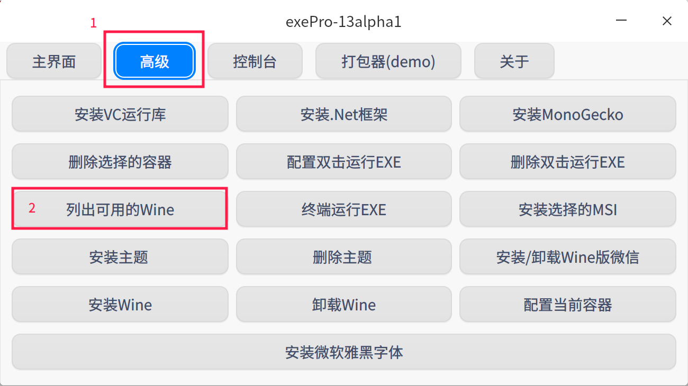
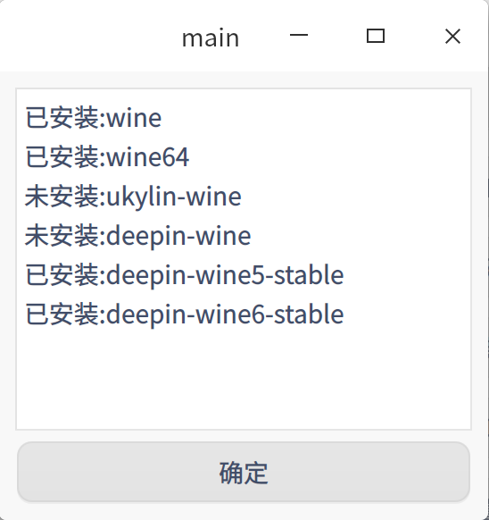
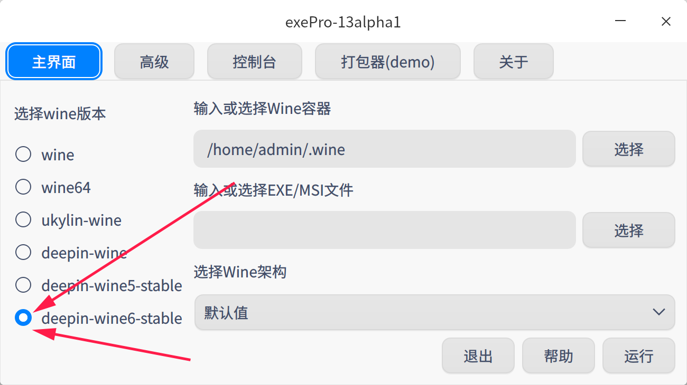
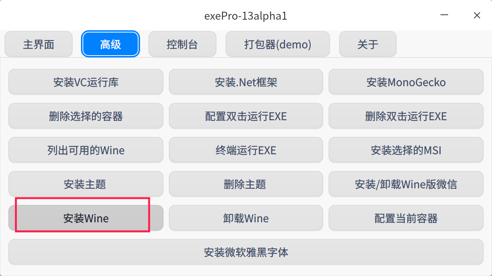
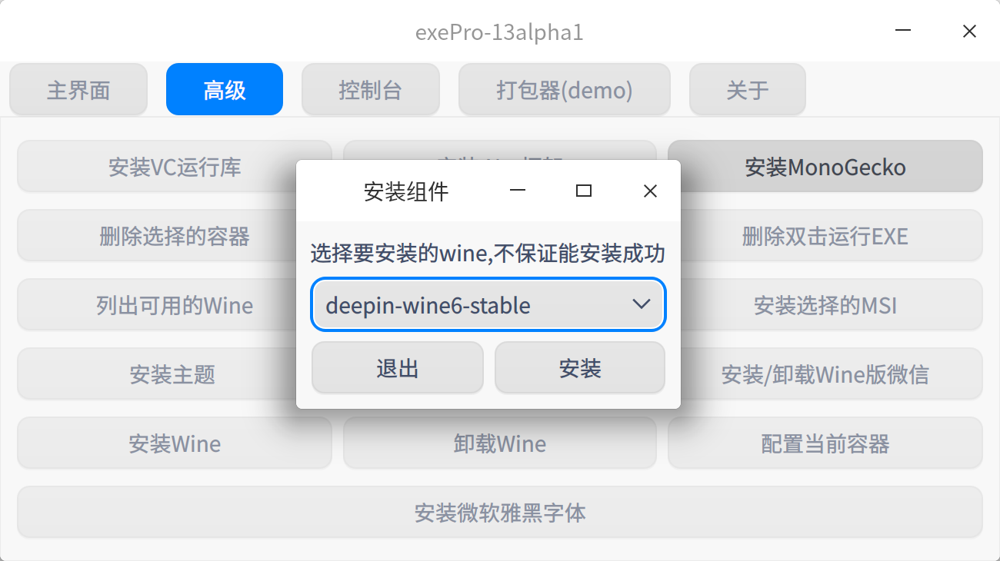
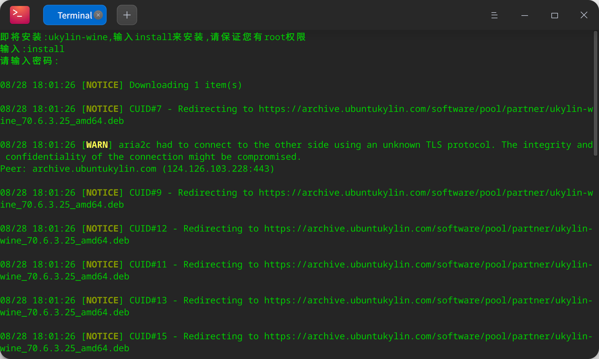

返回
exePro13alpha1发布! - 让您更加简便的使用Wine
使用教程:
1. 首先打开exePro
2. 点击高级 -> 列出可用的Wine
 
3. 返回主界面, 选择一个已安装的Wine(如果全是未安装, 那么可以安装Wine。)这里选择的是deepin-wine6-stable

3.1. 没有已安装的Wine，如何安装?
点击高级 -> 安装Wine

选择一个Wine版本(推荐deepin-wine6-stable和ukylin-wine), 然后点击安装

弹出终端后, 先输入install(会显示), 然后输入密码(不会显示), 然后就开始安装了。
5. 容器选择
一般在Linux下, 一个Wine容器对应者一个软件。
容器一般在主目录下, 名称一般已.开头(隐藏), 名称不能包含空格。
6. 选择EXE
不用说了吧很简单直接把EXE文件拖到输入框就好了(还需要删掉file://, 路径开头只有且必须一个/)
下载exePro
下载地址: https://setup.lanzoum.com/b03d4tiud
密码:wine